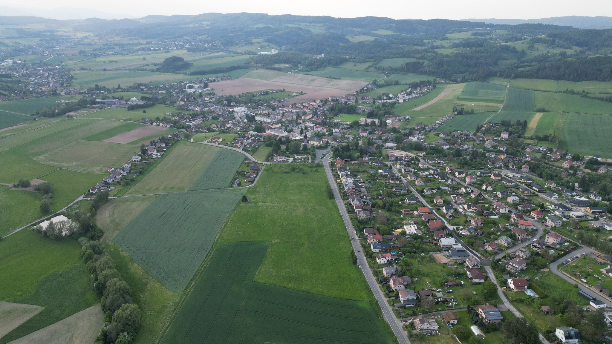
Vize Rtyně
Kliknutím na bod otevřete konkrétní místo.
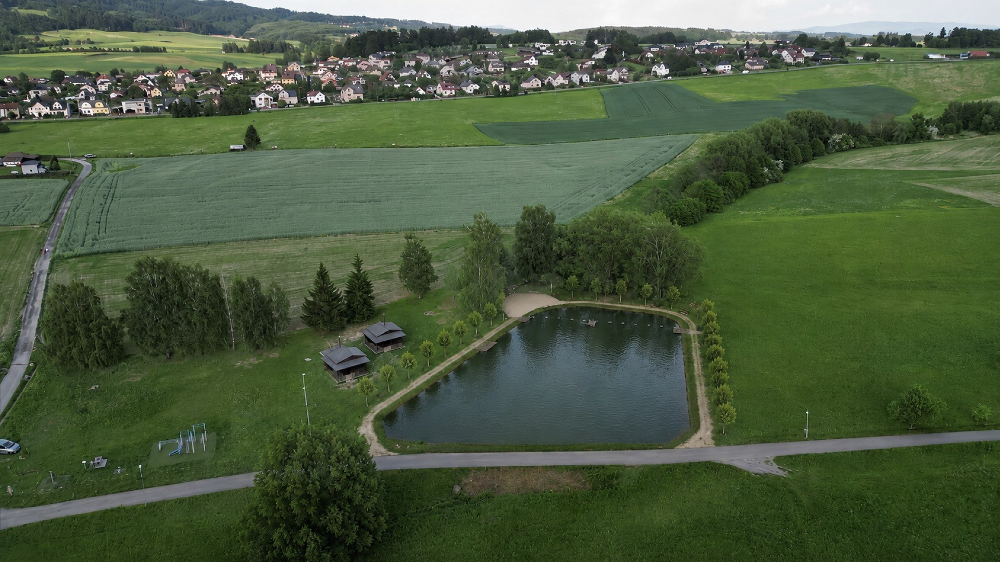
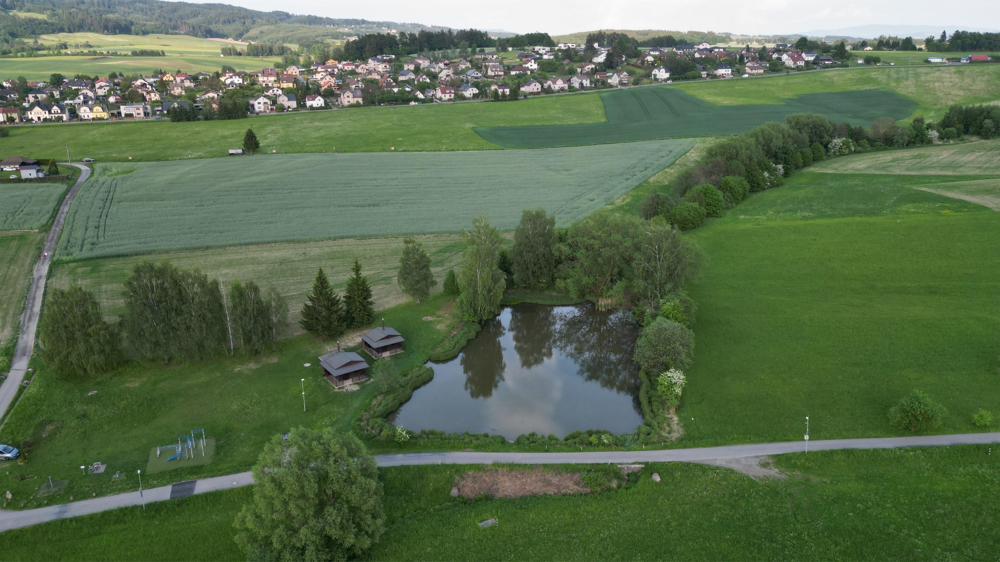
Žabárna
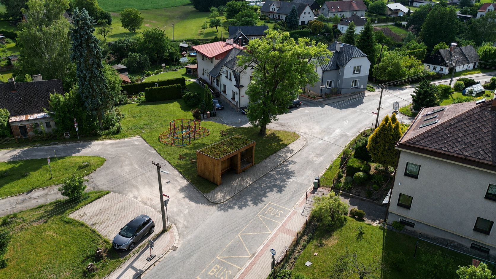
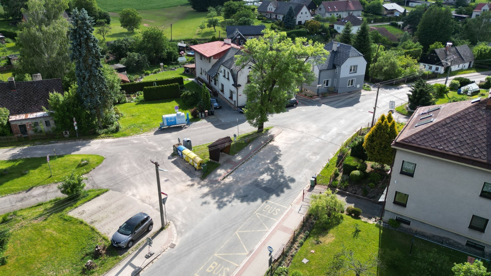
Park před Kampeličkou
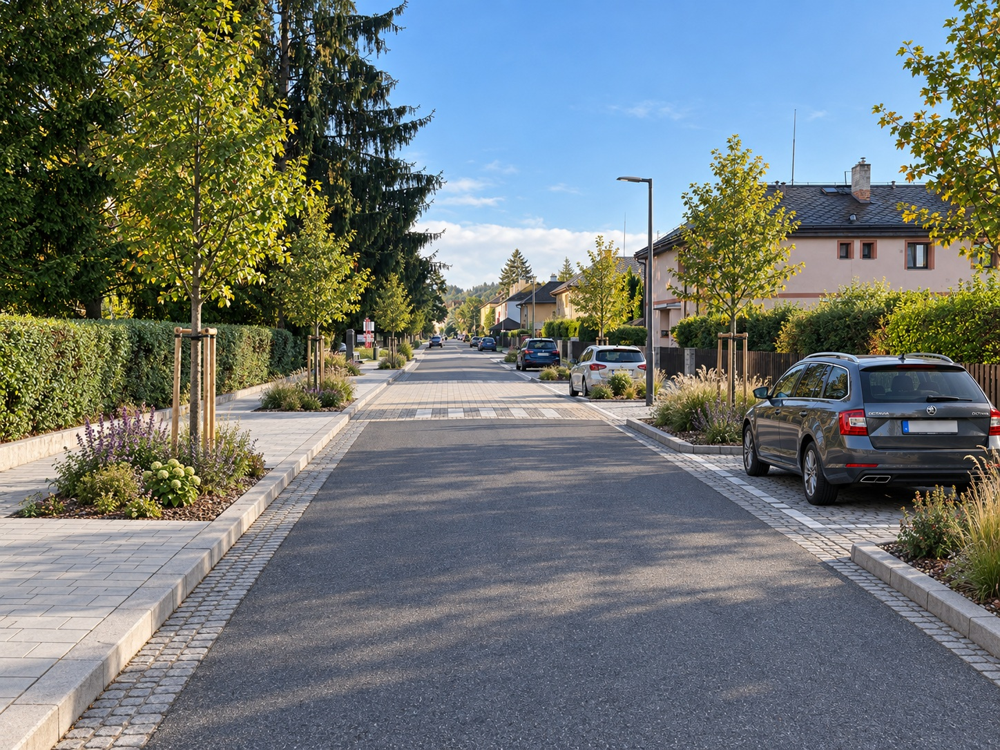
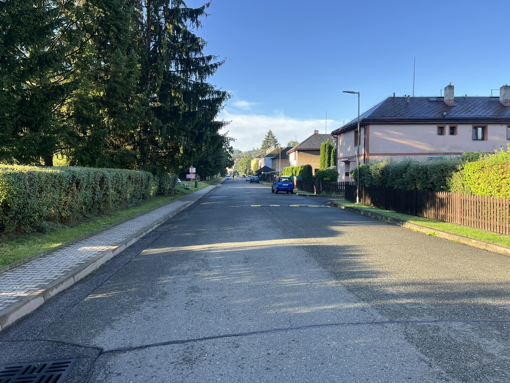
Hornická ulice
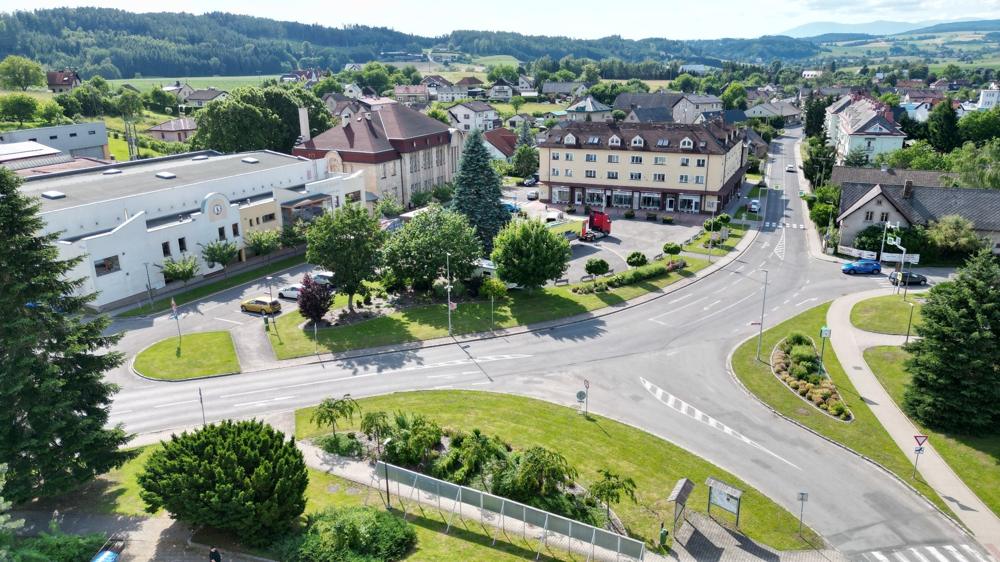
Náměstí
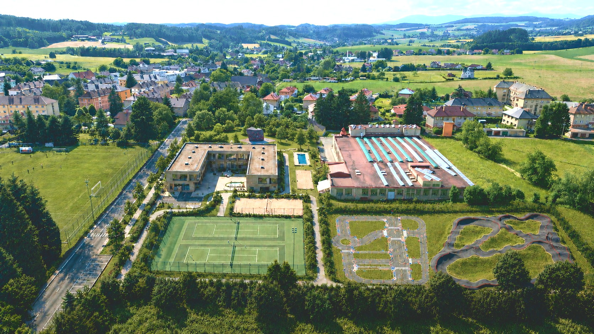
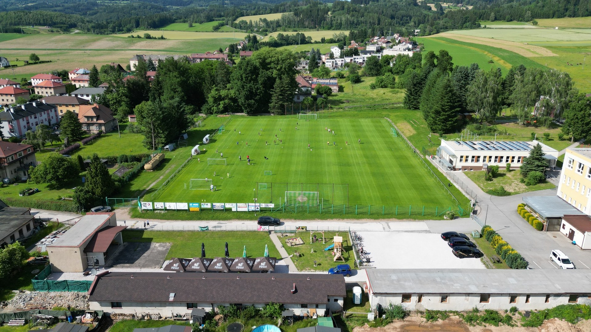
Centrum města
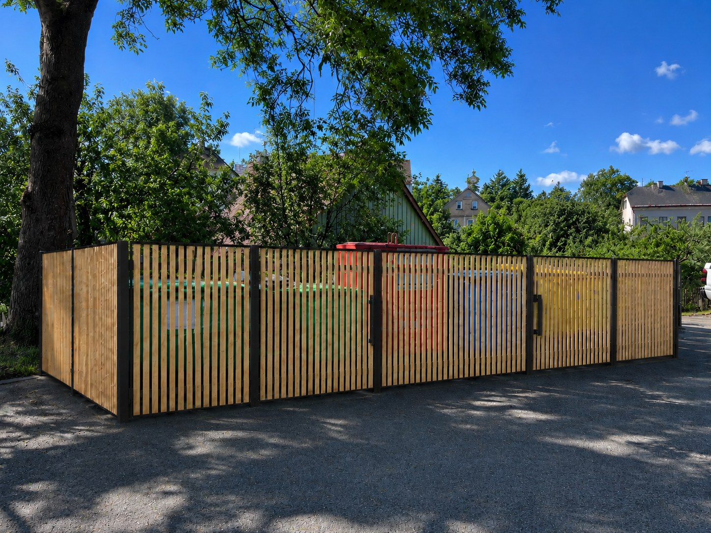
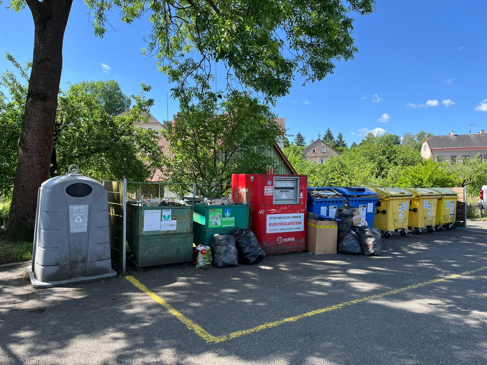
Odpadová místa


Rtyňský trail

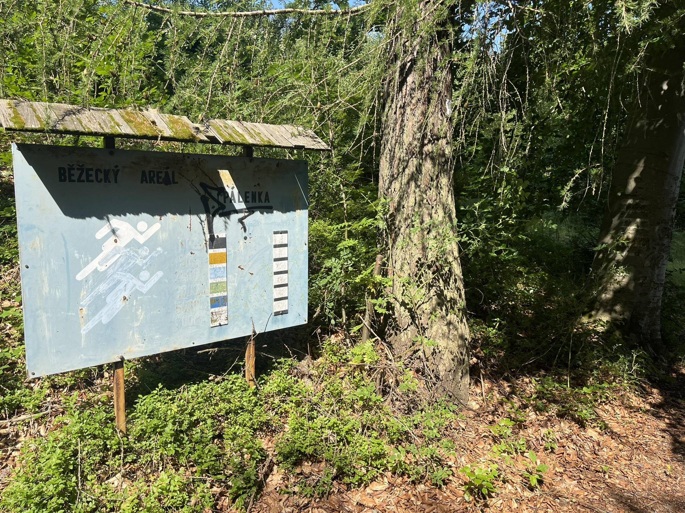
Běžecké trasy Pálenka
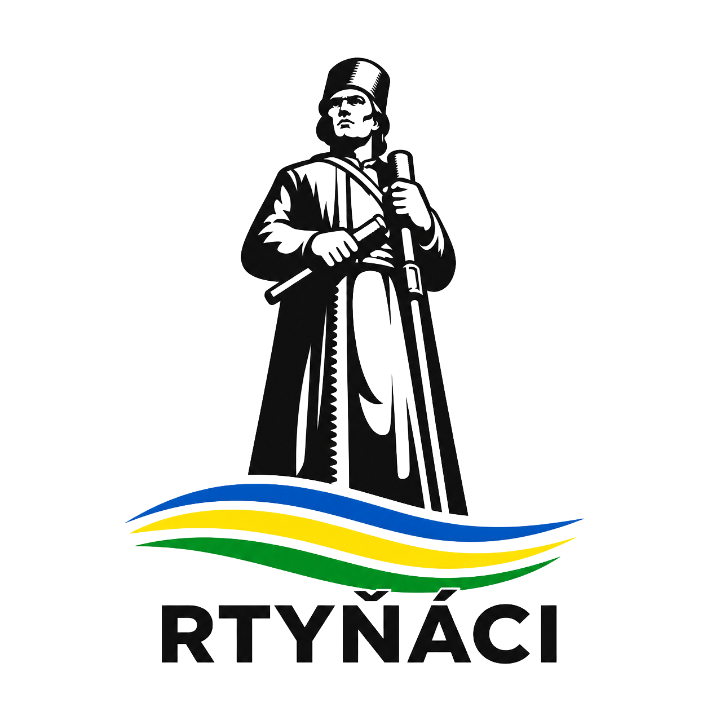
O projektu
Projekt Vize Rtyně představuje soubor námětů a myšlenek volebního sdružení Rtyňáci. Ukazuje možné směry, kterými by se Rtyně v Podkrkonoší mohla v následujících letech rozvíjet, aby se zde žilo lépe všem jejím obyvatelům.
Prezentované vizualizace byly vytvořeny s pomocí nástrojů umělé inteligence na základě nápadů a zadání členů sdružení Rtyňáci. Jejich účelem je přiblížit atmosféru a základní myšlenku navrhovaných změn. Nemusí proto přesně odpovídat skutečným rozměrům, technickým možnostem ani výsledné podobě případné realizace.
Jednotlivé návrhy nejsou hotovými projekty, architektonickými studiemi ani závaznými plány. Jsou především podnětem k diskusi o budoucnosti našeho města, jeho veřejných prostranství, dopravy, zeleně, služeb a dalších oblastí každodenního života.
Fotografie současného stavu byly pořízeny členy sdružení Rtyňáci. Fotografie použité u rozklivácích popisů pocházejí z veřejně dostupných internetových zdrojů. Vizualizace a fotografie v odkazech slouží pouze k ilustračním a prezentačním účelům. Práva k původním fotografiím náleží jejich autorům nebo příslušným držitelům práv.